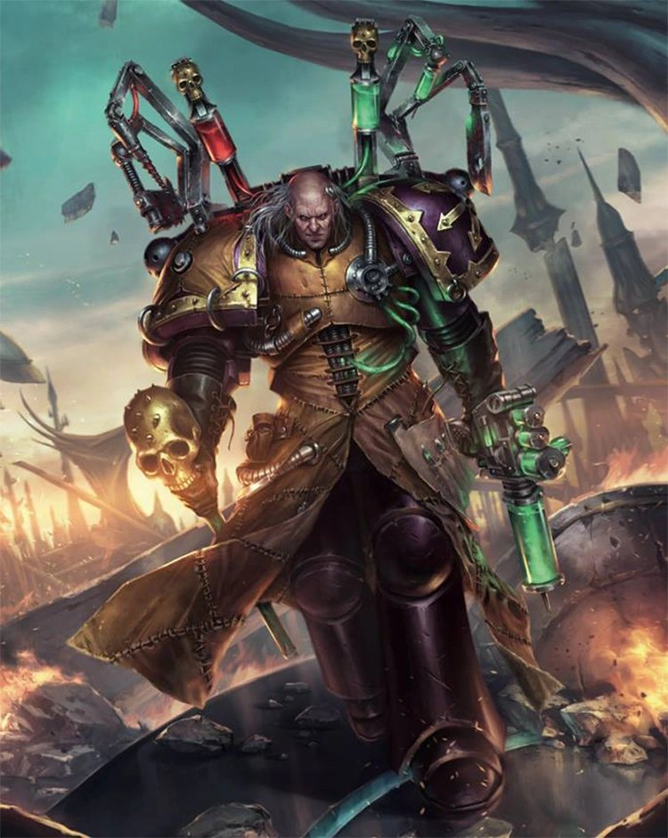

Fabius Bile
| Fabius Bile | |
|---|---|
| The Primogenitor | |
 Bile with the Chirurgeon, the surgical harness on his back, in the Era Indomitus Artwork © Games Workshop | |
| Chief Apothecary of the Emperor's Children | |
| Tenure | Great Crusade – Horus Heresy |
| Primarch | Fulgrim |
| Master of the Consortium of Urum | |
| Seat | The crone world Urum, Eye of Terror |
| Tenure | M32 – present |
| Born | Ingolstadt, northern Europa, Terra, during the Unification Wars |
| Status | Active; sustained by successive clone bodies |
| Allegiance | Himself; formerly the Emperor, then Horus |
| Legion | III Legion, the Emperor's Children (renegade) |
| Wargear | The Chirurgeon; the Rod of Torment; the Xyclos Needler; cloak of flayed skin |
| Known for | The New Men; cloning of primarchs; the corruption of the Emperor's Children; the theft of the blood of Sanguinius |
Fabius Bile, who calls himself the Primogenitor and is known as the Clone Lord, the Manflayer and the Spider, is a renegade Space Marine of the Emperor's Children and formerly that Legion's Chief Apothecary. For ten thousand years he has pursued one goal: to equal and surpass the Emperor's own work in the creation of the primarchs and the Space Marines, and to make a new and perfect humanity under his own control. His name is a curse to the High Lords of Terra, to the Apothecarions of the Chapters, and to the populations of countless worlds he has used as laboratories.[1]
Born on Terra during the Unification Wars, Fabius was one of the first warriors of the III Legion. During the Horus Heresy he rewired his brothers' nervous systems to turn pain into pleasure, delivering the Legion to Slaanesh, and at Fulgrim's demand he cloned the dead primarch Ferrus Manus. He left Terra before the end of the Siege of Terra and has since sold his skills to the Traitor Legions, chiefly his mastery of the progenoid glands without which they could not replenish their ranks, while refusing to serve any master but himself.[2][1]
In the Era Indomitus Bile has made the Primaris Space Marines the new object of his obsession, and in the War of the Spider he stole a relic of Nurgle from the Death Guard and captured warriors of the Adeptus Custodes and the Sisters of Silence for his experiments. He is at large.[1][3]
Origins
[edit]Fabius was born to a minor noble house of the mountains of northern Europa, in the city of Ingolstadt, during the Unification Wars. He later recalled little of his childhood but music and a library of leather-bound books. Taken into the III Legion as a youth, he became an Apothecary in the years before the Legion's primarch was found, when the Legion was close to extinction. A large part of its gene-seed had been destroyed by the Selenar gene-cults, and the rest was tainted by a virus later called the Blight.[2]
Fabius found a test for the Blight, and every infected warrior was executed. When he found that he was infected himself, he switched his samples and let a brother die in his place, reasoning that his research was too important to end. The Legion was saved when the Emperor rediscovered Fulgrim on Chemos and new gene-seed was made from the primarch's own tissue. Fabius was one of the two hundred Terran survivors who went to Chemos. His own condition could not be cured, and he kept himself alive by artifice. In later centuries he would survive by transferring his brain into a succession of cloned bodies.[2]
The Great Crusade and the Horus Heresy
[edit]
During the Great Crusade Fabius rose to lieutenant commander of the Emperor's Children, though he was rarely away from his surgery for long. From the corpses of the Laer, xenos worshippers of Slaanesh conquered by the Legion, he learned techniques of genetic alteration that he applied to his brothers. On the eve of the Drop Site Massacre he modified the nervous systems of the Legion so that pain stimulated the pleasure centres of the brain; his work produced the first Noise Marines and other mutant forms.[2]
After Isstvan V Fabius took part in the exorcism of the daemon that had possessed Fulgrim. At the primarch's demand he produced the first cloned primarch, a replica of Ferrus Manus, whom Fulgrim tried to win over again; each clone refused as the original had done, and Fulgrim killed each one. Fabius revived the Legion's commanders Eidolon and Lucius when they fell, and bred from tortured captives of both sides his first enhanced warriors.[2]
At the Siege of Terra the Emperor's Children took little part in the assault on the Palace, and fell instead upon the fleeing scribes and officials of the Administratum. Under Fabius' supervision more than a million prisoners were rendered down into stimulants and intoxicants for the Legion. He left Terra with a handful of acolytes before Horus fell, for which Fulgrim placed a price on his head. Through all of this Fabius never underwent the surgeries he imposed on his brothers, and he has never given himself to any Chaos god.[2]
After the Heresy
[edit]Urum and the Horus clone
[edit]During the Great Scouring Bile sold his services across the war-torn Imperium in exchange for prisoners, genetic material and lost technology, until the Salamanders burned his laboratories on Arden IX in a single night. His crippled ship drifted into the Eye of Terror and came to the crone world Urum, once a jewel of the aeldari empire, which became his home.[1]
He offered the Traitor Legions his skills, above all the harvesting of progenoid glands, and played them against each other so that none could own him. For a time he led the remnant of the Emperor's Children at Canticle City on the daemon world Harmony, where the Legion delivered to him the stolen body of Horus. Bile cloned the Warmaster. Abaddon, who had taken the name of the Black Legion, destroyed the clone as a blasphemy and razed Bile's laboratories in the Battle of Harmony. Bile fled, hunted by his own Legion, the aeldari and Fulgrim, and returned to Urum as a free agent.[1][a]
The Consortium and the Coven of the Thirteen Scars
[edit]From Urum Bile leads the Consortium, a fraternity of renegade apothecaries from several Traitor Legions. Captured in 796.M37 in a raid on an Emperor's Children citadel, he so impressed the Drukhari haemonculi of the Coven of the Thirteen Scars that he was received in Commorragh as a guest, and helped them to grow the living fortress called the Tower of Flesh. When he later taught their arts to others, the Coven slaughtered his students and altered his brain so that he could never speak of what he had learned.[1]
The New Men
[edit]On hundreds of worlds, Space Marines investigating Bile's visits have met hardened cadres of enhanced humans, the so-called New Men, with the strength, speed and intelligence of devils and the minds of tyrants. Bile regards them as his proudest creations. The Inquisition does not know how many have escaped into the Imperium, hidden in plain sight until their psychosis breaks out. Some mutant cults worship Bile as Pater Mutatis, father of all mutants. Among the names given him by his victims are the Chem-master of Dimmamar, whose air he poisoned until its people had to take his serums or suffocate, and the Manflayer of Arden IX, where he wore the skins of his enemies as a cloak.[1]
The blood of Sanguinius
[edit]Near the end of the 41st millennium Bile, disguised as a Magos Biologis named Haran Serpens, was brought to Baal by the Blood Angels' Chief Apothecary Caecus, who hoped to replenish the Chapter by cloning. The result was the Bloodfiends, monsters consumed by the Red Thirst, and in the chaos Bile stole a phial of the blood of Sanguinius. The Blood Angels tracked him to the ocean world Dynikas V, where Sergeant Rafen killed him; but the Bile he killed was a clone, as were the others killed in the raid. The true Fabius told his captive that he no longer needed the blood: he had already read its secrets for his greatest project, a clone of the Emperor Himself, obedient to Bile and lacking the Emperor's conscience.[4]
The Fulgrim clone
[edit]At some time before the 41st millennium Bile succeeded in creating a perfect clone of Fulgrim, uncorrupted by Slaanesh and with the memories of the Great Crusade and the Heresy. The clone repented and swore to atone. Bile, fearing that the new Fulgrim would make the same choices as the old, betrayed him to the Necron Trazyn the Infinite, in whose collection on Solemnace the clone is held.[1]
Era Indomitus
[edit]
The Primaris obsession
[edit]Bile first saw Primaris Space Marines on the world of Agrathane Excellia after the opening of the Great Rift, where a strike force of the newly founded Nemesors Chapter took a fortified Black Legion bastion in a single hour. Impressed despite himself by the work of Belisarius Cawl, he has since sought to capture and dissect Primaris warriors, intending to blend their bodies with the energies of Chaos and breed his own versions.[1]
The War of the Spider
[edit]During the psychic upheavals that followed the Rift's opening, Bile stole the Ark Cornucontagious, a relic given to the Death Guard by the Great Unclean One Rotigus that can corrupt whole worlds in days. Typhus pursued him with a plague fleet. Bile allied with the Chaos Space Marine warband of the Shriven under Argento Corian, and in the war that followed he played all sides against one another. He turned the Shriven into his Terata and Corian into a monstrous golem. On Bairsten Prime he captured warriors of the Adeptus Custodes and the Sisters of Silence, the rarest specimens he had ever taken. In the final battle on Dessah the Shriven, the Death Guard and the Custodes destroyed one another while Bile escaped with his prisoners and the Ark to Urum.[3]
Status
[edit]As of the latest Imperial records Fabius Bile is alive and at large, working from Urum and from secret laboratories in perhaps a dozen locations across the galaxy, served by an unknown number of clones of himself. He remains independent of the Traitor Legions and the Chaos gods, trading his skills to Heretic Astartes in the Era Indomitus, and the Inquisition regards his pursuit of the Primaris and of the Emperor's genetic code as one of the gravest threats to the Imperium's future.[1]
Appearance and character
[edit]Bile is gaunt and skeletal, with white hair bound in a long scalp-lock and black eyes changed to match those of his primarch. He wears a floor-length coat of human skin taken from the dead of Isstvan V, in which faces can still be recognised. He holds to a twisted form of the Imperial Truth, scorning the Chaos gods as crutches for the weak, and regards himself as the Emperor's true heir in the science of life. Arrogant, curious and without pity, he treats every living being as a specimen.[1]
Wargear
[edit]- The Chirurgeon, a surgical harness of mechanical arms, blades and injectors that also keeps his failing body alive.
- The Rod of Torment, a skull-topped rod that floods its victims' nerves with agony.
- The Xyclos Needler, a pistol that fires darts of virulent toxin.
Timeline
[edit]| Date | Event |
|---|---|
| M30[b] | Fabius is born in Ingolstadt on Terra during the Unification Wars |
| c. 000.M31[c] | Fabius becomes an Apothecary of the III Legion and finds a test for the Blight on Chemos |
| 012.M31 | On the eve of the Drop Site Massacre Fabius alters the nervous systems of the Emperor's Children |
| 012.M31[d] | At the request of Fulgrim, Fabius produces the first cloned primarch, a replica of Ferrus Manus |
| 013–014.M31 | The Emperor's Children take part in the Siege of Terra; Fabius leaves Terra before the death of Horus |
| M32 | Fabius settles on the crone world of Urum and founds the Consortium |
| 796.M37 | Fabius is captured in a raid on an Emperor's Children citadel and taken to the Drukhari Commorragh |
| late M41 | Fabius visits Baal disguised as a Magos Biologis and steals a phial of the blood of Sanguinius |
| after 999.M41 | Fabius first sees Primaris Space Marines on Agrathane Excellia after the opening of the Great Rift |
| early M42 | In the War of the Spider Fabius steals the Ark Cornucontagious from the Death Guard and captures warriors of the Adeptus Custodes and the Sisters of Silence |
See also
[edit]Notes
[edit]- ^ Imperial and Traitor accounts of the Horus clone disagree on whether Bile intended it as a gift to Abaddon or as a rival to him. Records of the Battle of Harmony are fragmentary.
- ^ Estimated; no record gives an exact year.
- ^ Estimated from the sequence of events; no record gives an exact year.
- ^ Estimated from the sequence of events; no record gives an exact year.
References
[edit]- ^ a b c d e f g h i j k Codex: Chaos Space Marines (9th Edition), pg. 104. Games Workshop. Reynolds, Josh. Fulgrim: The Palatine Phoenix (novella). Black Library, Chs. 1-2.
- ^ a b c d e f Reynolds, Josh. Fabius Bile: Primogenitor (novel). Black Library, Chs. 2-4, 7, 11, 13, 14, 18. Reynolds, Josh. Fabius Bile: Clonelord (novel). Black Library, Chs. 3-5, 20-21, 24.
- ^ a b Codex Heretic Astartes - Chaos Space Marines (8th Edition), pp. 48 ("The Primogenitor Primaris"), 86, 119. Games Workshop. Psychioc Awakening: War of the Spider (8th Edition), pp. 8-19. Games Workshop.
- ^ Counter, Ben. Galaxy In Flames (novel). Black Library. McNeill, Graham. Fulgrim (novel). Black Library.